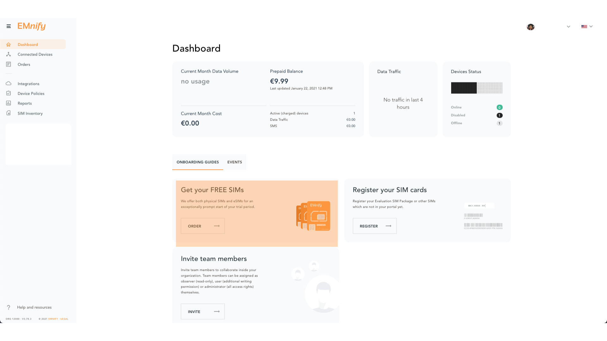
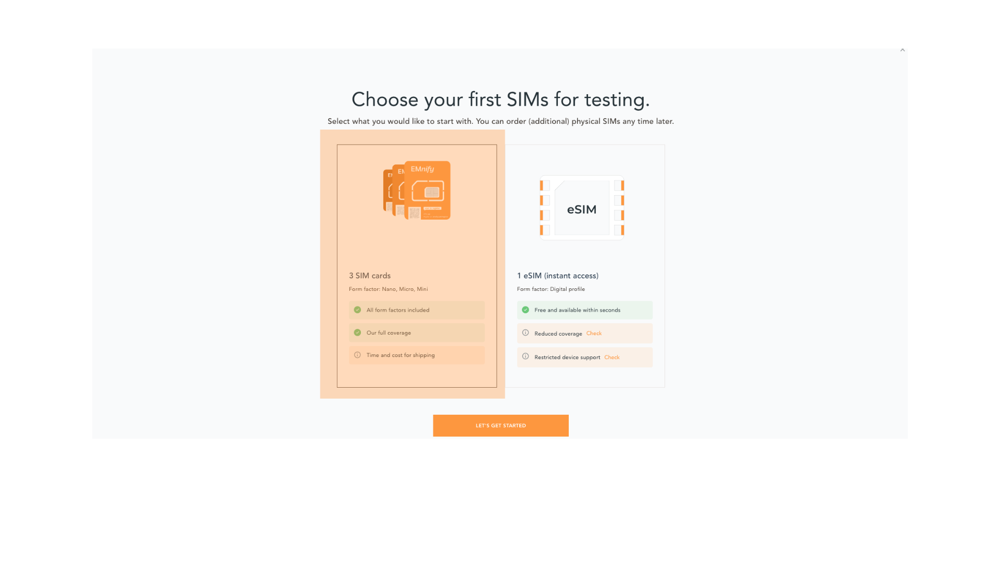
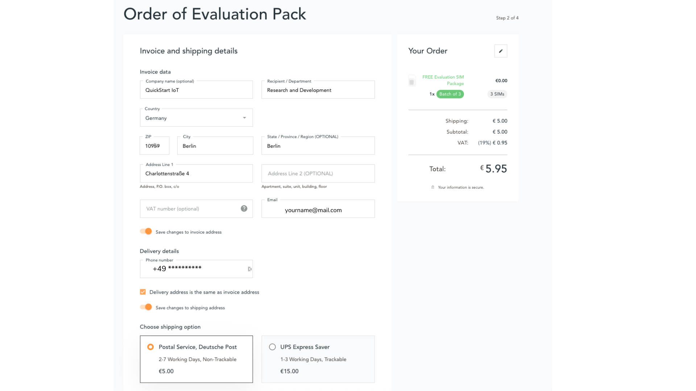
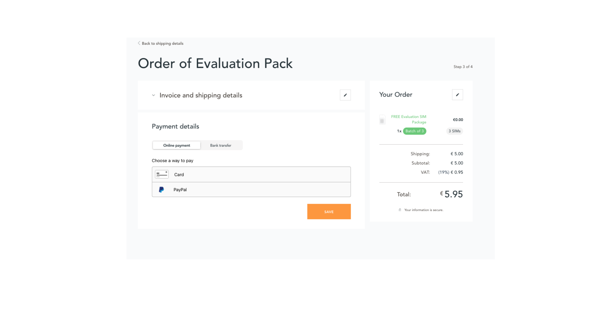

Cellular IoT
Cellular is the most used wireless network technology for connecting things. It is superior to any other wireless technology in terms of network availability and security. Using cellular connectivity improves end customer experience by instantly delivering data at the customer site without any integration. This makes cellular connectivity not only ideal for mobile use cases but also for stationary devices.
EMnify specializes in businesses utilizing cellular connectivity for the Internet of Things. EMnify has developed a communication platform which aggregates and enriches traditional cellular connectivity so that businesses can easily connect, integrate, operate, and secure hundreds and thousands of devices with a single global IoT SIM card.
Quickstart
To begin developing your IoT solutions with EMnify, you will need an EMnify account. Sign up for free to a 60-day trial to use all functionalities.
Order a free evaluation SIM package
You can order your free Evaluation SIM package on the EMnify Portal with which you can test all EMnify services. Currently, the 3 physical SIM cards can be delivered to many destinations at no charge. For other destinations, we do charge a small shipping fee.
To get started immediately, you can download the eSIM for your smartphone or eSIM enabled tablet for free.
Log into your EMnify account and follow these steps:
-
On the dashboard, click on order on Get your FREE SIMs
Order SIMs -
Select the SIM cards of your choice.
Select SIM typeIf you select physical SIM cards, you can further choose between 3in1 (no nano SIM) or 4in1 (with nano SIM).
 Select SIM form
Select SIM formIf you select the eSIM, you can directly download it into your eSIM compatible phone. You can find the instructions to do so in this blog post.
-
For the physical SIM cards, proceed to fill in your shipping details.
Shipping details -
Proceed to pay the shipping charges and you will be notified when the SIM cards will be shipped.
Payment details
Registering SIMs
Once you get your EMnify SIMs, you need to register them before you can start using them.
-
If you have ordered the 3 orange evaluation SIM cards, you will have to register them one by one. Scan the QR code printed on the SIM card with your QR code scanner app and follow the link to associate the SIM with your account. The link includes the BIC (Batch Identification Code) of the card.
Scan QR Code -
If you do not have a QR reader or want to do this on a desktop PC without a camera, register by manually entering the BIC.
Login to your EMnify account. On the dashboard, click the REGISTER link in the "Register your SIM cards" section.
Register SIMRegister single SIM -
Enter the Batch Identification Code (BIC 1) in the prompt. You can find the BIC1 on the back of your SIM card.
 BIC1
BIC1 -
If you have ordered more than 5 SIM cards, you need to batch register them using the BIC2.
BIC2 Registration complete
Registration completeIf you have a developer eSIM, the downloading process of an eSIM automatically registers it in our portal.
Creating a Device
After you register a SIM, you need to create a virtual representation of the device associated with the SIM. To create a device, give it a name and assign a service and coverage policy.
If you plan on using your device right away, activate it. If you do not plan on using the device right away, select "leave disabled".
Getting the first device online
Any device equipped with a SIM card requires an APN (Access Point Name) configuration to establish a data session. Some devices and networks auto-detect the APN but for most cases you need to configure it.
APN: em (or alternatively use emnify)
Further, some Android / iOS-based devices and cellular modules also need to be configured to allow for roaming.
Select your device type and model below, to see how to configure the APN.
Android
When setting up an Android device with an EMnify IoT SIM, you need to follow these 4 steps after inserting the SIM
-
Go to Settings → Mobile Network
-
Go to Mobile data
-
Enable roaming, and go to Access Point Names (APN)
-
Create a new APN with any name and configure the APN with "em"
iOS devices
When setting up an iOS device with an EMnify IoT SIM, you need to follow 4 steps after inserting the SIM
-
Go to Settings → Mobile Data
-
Click on the EMnify Data Plan (first one if regular SIM or secondary in case of eSIM)
-
Enable Roaming and Click on Mobile Data Network
-
Set APN to em - leave anything else blank
Cellular modules
Quectel cellular IoT modules
Applies to all Quectel modules: BG95, BG96, EG25, EG91, EG95, EC21, EC25, M65, M66, M95, MC60, BG77, BG600L
With Quectel modules the APN can be set with the 3GPP standard command AT+CGDCONT
AT+CGDCONT=1,"IP","em",,
Quectel also utilizes a vendor specific Command AT+QICSGP
AT+QICSGP=1,1,"em","","",1
According to Quectel the command AT+QICSGP shall be used when the internal TCP/UDP stack should be used – and it also allows to configure which bearer (CSD or GPRS) is used. GPRS must be used.
For managing roaming, Quectel also introduced the AT+QCFG command. The suggested setting is:
AT+QCFG="roamservice",2,1
| Check your Quectel module AT command guide for more information. |
u-Blox cellular IoT modules
u-Blox supports the standard 3GPP command to set APNs via AT+CGDCONT
AT+CGDCONT=1,"IP","em",,
u-Blox also supports a vendor specific command to configure the APN for the initial EPS bearer.
AT+UCGDFLT=1,"IP","em"
For roaming configuration, u-blox modules utilize a vendor specific AT+UDCONF command. This enables automatic search in case the device is not able to attach to a specific network.
AT+UDCONF=20,2
| Check your u-Blox module AT command guide for more information. |
General cellular IoT modules
Applies to cellular module vendors: Fibocom, Telit, Sierra Wireless, SIMcom, Cinterion, Gemalto, Thales, Sequans
The commands for configuring the APN settings are 3GPP standardized and all major cellular module manufacturers support these commands.
The AT+CGDCONT command is used to set the APN.
AT+CGDCONT=1,"IP","em",,
| Check your manufacturer’s AT command guide for further information or read 3GPP Technical Specification 27.007. |
GPS tracker
For other GPS vendors, please consult the device manual and configure the APN to em or emnify.
|
Teltonika GPS APN configuration
Applies to FMB110, FMB120, FM130, FMB140, FMC001, FMM001, FMC125, FMC130, FMC640, FMM125, FMM130, FMM640, FMP100, FMB001, FMB002, FMB003, FMB010
Source: Teltonika GPS documentation
Configuring the APN for Teltonika GPS trackers can be done through
-
Teltonika Configurator over a USB, Bluetooth connection
-
Via the SMS console through the EMnify Portal (most simple)
-
Via the EMnify SMS API or Zapier Integration (when automating the configuration)
| Newer Teltonika GPS versions automatically detect the EMnify APN setting |
When the GPS tracker is turned on for the first time after the SIM is installed, it shows the status Attached in the EMnify Portal. At this point the device can receive SMS but not establish a data session unless the APN is automtically detected or manually set up.
The SMS command to set the APN is:
setparam 2001:em
| Please note the two leading spaces |
Ruptela GPS APN configuration
Applies to HCV5, LCV5, Pro5, Trace5/NA, FM-Tco4 HCV/HCV 3G, FM-Tco4 LCV/LCV 3G, FM-Pro4/Pro4 3G, FM-Eco4/4+, FM-Eco4 light/light+/3G, FM-Eco4 S Series, FM-Eco4 T Series, FM-Plug4
Source: Ruptela Documentation
Configuring the APN for Ruptela GPS trackers can be done through
-
Ruptela Device Center over a USB, Bluetooth connection
-
Via the SMS console through the EMnify Portal (most simple)
-
Via the EMnify SMS API or Zapier Integration (when automating the configuration)
When the GPS tracker is turned on for the first time after the SIM is installed, it shows the status Attached in the EMnify Portal. At this point the device can receive SMS but not establish a data session unless the APN is automtically detected or manually set up.
The SMS command to set the APN for Ruptela GPS trackers is:
[SMSpassword] setconnection em
The [SMSpassword] can be set up in the Ruptela device center. If it is not set, then the password can be omitted, and the command is only
setconnection em
Concox GPS APN configuration
Applies to JM-VL01, JM-VL02, JM-BL11, JM-VL03, JM-VL04, JM-LL01, JM-LL02, JM-LL301, X3, Wetrack140, Wetrack2, Wetrack lite, Bl10, GT06N, OB22, ET25, HVT001, EG02, JM-VG01U, JM-VG02U, JM-VG04Q, AT1-AT6, CT10, JM-LG01, JM-LG05, TBT100
Configuring the APN for Concox GPS trackers can be done
-
Via the SMS console through the EMnify Portal (most simple)
-
Via the EMnify SMS API or Zapier Integration (when automating the configuration)
When the GPS tracker is turned on for the first time after the SIM is installed, it shows the status Attached in the EMnify Portal. At this point the device can receive SMS but not establish a data session unless the APN is set up.
The SMS command to set the APN for Concox GPS trackers is:
APN em#
For some Concox models (e.g., TR02) the password (default 666666) needs to be sent with the command
APN,666666,em#
Coban GPS APN configuration
Applies to Coban TK104, GPS303X, GPS103X, GPS306X, LK209, …
Configuring the APN for Coban GPS trackers can be done
-
Via the SMS console through the EMnify Portal (most simple)
-
Via the EMnify SMS API or Zapier Integration (when automating the configuration)
When the GPS tracker is turned on for the first time after the SIM is installed, it shows the status Attached in the EMnify Portal. At this point the device can receive SMS but not establish a data session unless the APN is set up and the GPRS service is activated.
To turn on GPRS
gprs[your_password]
The SMS command to set the APN for Coban GPS trackers is:
APN[your_password] em
The default password is 123456. There are no spaces between gprs/APN and the password, thus by default
APN123456 em
Meitrack GPS APN configuration
Applies to P88L, P99, MT90, T663L, T333, T366, T399, TS299L, TC68L, TC68SG, T622, K211G, T355G
Configuring the APN for Meitrack GPS trackers can be done
-
Via the Meitrack manager
-
Via the SMS console through the EMnify Portal (most simple)
-
Via the EMnify SMS API or Zapier Integration (when automating the configuration)
When the GPS tracker is turned on for the first time after the SIM is installed, it shows the status Attached in the EMnify Portal. At this point the device can receive SMS but not establish a data session unless the APN is set up.
The SMS command to set the APN for Meitrack GPS trackers is:
0000,A81,em,,
Where 0000 is the default SMS password.
On other devices the APN setting is done via the A21 command
666888,A21,1,server.meigps.com,8800,em,,
Where 666888 is the default superpassword (not the SMS password).
Both SMS and Superpassword can be changed and would then need to be replaced in the SMS command.
Elinz GPS APN configuration
Configuring the APN for Elinz GPS trackers can be done
-
Via the SMS console through the EMnify Portal (most simple)
-
Via the EMnify SMS API or Zapier Integration (when automating the configuration)
When the GPS tracker is turned on for the first time after the SIM is installed, it shows the status Attached in the EMnify Portal. At this point the device can receive SMS but not establish a data session unless the APN is set up.
The SMS command to set the APN for Elinz GPS trackers is:
APN,em#
Other models have a slightly different APN configuration
apn[password] em
Default password 123456.
Reachfar GPS APN configuration
Configuring the APN for Reachfar GPS trackers can be done
-
Via the SMS console through the EMnify Portal (simplest way)
-
Via the EMnify SMS API or Zapier Integration (when automating the configuration)
When the GPS tracker is turned on for the first time after the SIM is installed, it shows the status Attached in the EMnify Portal. At this point the device can receive SMS but not establish a data session unless the APN is set up.
Applies to RF-V6+, RF-V8, RF-V8S, RF-V13, RF-V16, RF-V18, RF-V20
The following two SMS commands should be sent
123456,sos1,[yourphonenumber]#
to bind the tracker to a specific phone number e.g. 49173871878 (instead of +49173871878). 123456 is the default SMS password.
The SMS command to set the APN is:
apn,em,plmn,90143#
123456 is the default password. After setting the APN the GPS tracker needs to be rebooted.
Applies to RF-V26, RF-V26+, RF-V28, RF-V30, RF-V32, RF-V34, RF-V36, RF-V36, RF-V38, RF-V40, RF-V42, RF-V43，RF-V44, RF-V46
The following two SMS commands should be sent
pw,123456,center,[yourphonenumber]#
to bind the tracker to a specific phone number e.g. 49173871878 (instead of +49173871878). 123456 is the default SMS password.
The SMS command to set the APN is:
apn,em# // Send this SMS from the phone
Queclink GPS APN configuration
Configuring the APN for Queclink GPS trackers can be done
-
Via the SMS console through the EMnify Portal (most simple)
-
Via the EMnify SMS API or Zapier Integration (when automating the configuration)
When the GPS tracker is turned on for the first time after the SIM is installed, it shows the status Attached in the EMnify Portal. At this point the device can receive SMS but not establish a data session unless the APN is set up.
The SMS command to set the APN for Queclink GPS trackers is:
AT+GTBSI=[password],em,,,,,,,0002$
The default password is the device model, e.g., gl200
Bitrek GPS APN configuration
Configuring the APN for Bitrek GPS trackers can be done
-
Via the SMS console through the EMnify Portal (most simple)
-
Via the EMnify SMS API or Zapier Integration (when automating the configuration)
When the GPS tracker is turned on for the first time after the SIM is installed, it shows the status Attached in the EMnify Portal. At this point the device can receive SMS but not establish a data session unless the APN is set up.
The SMS command to set the APN for Bitrek GPS trackers is:
setparam 0242 em
The Bitrek GPS tracker also utilizes a roaming command setparam 0917 together with a list of enabled networks setparam 0020-0099. The following SMS commands should be sent
setparam 0917 1
to enable roaming in all networks as defined in the next SMS
setparam 0020 <MNC>
where <MNC> is the mobile network code on which the device shall roam
setparam 0021 <MNC> .... setparam 0099 <MNC>
All commands can be concatenated into one SMS (max. 160 characters) by using ; as a delimiter.
setparam 0242 em; setparam 0917 1; setparam 0020 <MNC>; .....
Industrial Routers
Teltonika Routers
Applies to RUT240, RUT950, RUT955, RUTX09, RUTX11, RUTX12, RUTX14, RUTXR1, RUT360
Newer firmware version of the Teltonika Routers should automatically detect the EMnify APN. In case the APN is not correctly detected, it can be configured via 3 methods
-
With the Teltonika WebUI over Wifi, Ethernet
-
Via the SMS console through the EMnify Portal (most simple)
-
Via the EMnify SMS API or Zapier Integration (when automating the configuration)
-
APN configuration through the Teltonika Router WebUI
Connect your PC through the router’s Wi-Fi using the credentials provided on the device. Open the Teltonika WebUI http://192.168.1.1 and go to the Mobile configuration. Type in
emin APN – there is no PIN configured on the SIM and no APN username or password required. -
Teltonika Networks Router APN configuration via SMS console / API or Zapier
Source: Teltonika Documentation
Make sure that the router is powered on, and the SIM card is inserted and activated. In the EMnify Portal the device should show as
Attached.The following SMS command should be sent to the device
cellular apn=em
Troubleshooting
When you experience issues while connecting your device for the first time, there are several common patterns that can be identified by looking at the connected device section in the portal. If you do not have an entry in the connected devices - go back to Creating a Device and assign the SIM.
The device will show different icons that indicate the status (Offline, Attached, Online, Blocked). If no icon is visible, assign a SIM to the device.
For most of the troubleshooting, a look at Details → Events is necessary. A usual event flow should look like this:
-
Update Location - The SIM card has (re)authenticated with a different network element. If successful, the device will show as
Attachedand can already receive SMS. -
Update GPRS Location - The SIM card has successfully registered for data sessions with a different network element.
-
Create PDP context - The device has started transfering data. The device will show
Onlineas long as there is no 'delete PDP context' event. -
Delete PDP context - The device has ended a data transfer. The event details will also show the data transmitted and the device status will be set to
Offline

There can be many location updates before or in between the data sessions.
The device is offline
-
Click on Details → Ensure that the device is enabled
-
Click on Details → Events. Validate if there is any location update event created and rejected. The reason should indicate the resolution to the problem.
If there is no location update event:
-
Ensure the device is powered on, and searches for a network
-
Ensure that the device is in reception for any supported network
The device shows attached but does not transmit data
-
Ensure that the APN is correctly set to
emor alternatively useemnifyas some devices do not support short APNs. Guides for different devices can be found here -
In case you have changed your policy settings, make sure the radio types (2G,3G,4G) and data access is activated.
-
Ensure mobile data is enabled, as well as international roaming is allowed
-
Click on Details → Events. Validate if there was any PDP create event that was rejected. The reason and resolution should be in the event description.
The Attached status does not necessarily mean that the device is powered on. If the device first attaches to a network and then powers off - there is no information towards the EMnify network that would allow to detect this.
|
 The device shows online but does not transmit data
The device shows online but does not transmit data
-
Ensure mobile data is enabled, as well as international roaming is allowed
-
Check under Details → Events if you see
WarnorErrorin the Severity field, it indicates that there is a problem. -
For NB-IoT and LTE-M this behavior can happen when the device automatically connects to a network. Specify the network that should be used with the
AT+COPScommand. This way the device will not attach to an unsupported network. Check the EMnify NB-IoT coverage and LTE-M network coverage lists. -
Ensure that your data destination and DNS server is not blocked for the device. EMnify by default assigns Google’s 8.8.8.8 DNS server, if your device does not specify a DNS.
Other general troubleshooting tips
-
After making the configuration changes, make sure they are correctly applied on the device (e.g., with a reboot)
-
Clicking reset connectivity on Connected Devices, can also reset the network state and allow your device to reattach
-
The issue may only be present with one network or in a specific location (e.g., due to high interference for this network). You can use the 'Operator Blacklist' to block the network and force the device to connect to a different network.
Service Stack Overview
EMnify offers the following high-level products and services:
-
A programmable Global IoT SIM
-
Including an eSIM for quick evaluation
-
-
A reliable Global IoT Network
-
Access to all Radio Access Types including IoT optimized LPWAN: LTE-M/NB-IoT
-
The EMnify IoT Cloud Communication Platform including
-
User Interface for operating and managing connectivity and SIMs
-
with Regional Breakout to ensure data does not traverse continents
-
-
The Data Streamer to integrate connectivity data into services for IoT operations
-
A holistic SASE oriented approach for a central control over Security and networks
-
Cloud Connect for connecting with other cloud platforms
-
SMS communication
-
Business enablers such as No-Code Workflow Automation to automate workflows between third party applications
-
API and tools for SIM Life Cycle Management
-
Cloud Integrations to the infrastructure where your application or 3rd party services lie.
Services
Global IoT SIM
EMnify IoT SIMs are more durable than regular SIM cards and come in different form factors and quality grades. For testing the platform services quickly without any SIM hardware - EMnify offers an eSIM which can be downloaded directly onto a supported smartphone. EMnify also has a multi-IMSI software application directly on the SIM so different operator profiles can be used based on the location of the device. Using this technology EMnify can provide a superset of roaming networks from traditional operators.
Form Factors
The traditional, pluggable SIM card comes in 4 different form factors:
-
1FF (approximately the size of a credit card) - 85 x 54 x 0,76mm
-
2FF (mini SIM) - 25 x 15 x 0,76mm
-
3FF (Micro SIM) - 15 x 12 x 0,76 mm
-
4FF (Nano SIM) - 12,3 x 8,8 x 0,67 mm
EMnify offers pre-punched SIM cards in different combinations 2-in-1 (1FF and 2FF), 3-in-1 (1FF,2FF,3FF) and 4-in-1 (1FF,2FF,3FF,4FF). Especially in use cases where the devices are moving it is advisable to use a SIM which exactly fits the device and does not have another smaller form factor punched out. The SIMs are then more durable and the contact to the device is more firmly.
Another form factor is MFF2 also called embedded SIM with the dimension 6 x 5 x 0.75-0.82mm. The embedded SIMs are soldered onto a device and are not removable.
Note: Often the term eSIM is used for the MFF2 factor. Nevertheless, the eSIM term is also used for SIMs whose operator profiles can be updated over the air. These eUICC based eSIMs can come in any of the described form factors, and not just MFF2. While eSIM/eUICC is widely adopted for consumer smartphone and watches - for IoT use cases (where the profile cannot be download via a screen or QR reader) the commercial and deployment model of the required infrastructure prohibits an easy change of operator profiles and is therefore not widely adopted.
Quality Grades
The EMnify SIM cards come in two different quality grades Commercial and Industrial. In below table a comparison to a standard consumer SIM is made.
| Parameter | Consumer SIM | Commercial | Industrial |
|---|---|---|---|
Available form factors |
2FF, 3FF, 4FF |
2FF, 3FF, 4FF |
MFF2, 2FF, 3FF (2-in-1 or 3-in-1) |
Temperature Range |
- |
25° - 85°C |
-40° - 105°C |
Data Retention |
10 years |
10 years |
15 years at 85°C |
Write Cycles |
100,000 |
500,000 |
1,000,000 |
Memory |
64-128kB |
128kB |
128KB |
Corrosion Resistance Jedec JSD22-A107 |
- |
CA |
CC |
Moisture Resistance Jedec JESD22-A102 |
- |
110°C / 85% RH |
130°C / 85% RH |
Humidity Resistance Jedec JESD22-A101 |
- |
- |
HA |
Vibration Jedec JESD22-B103 |
- |
- |
VA |
Mechnical Shock Jedec JESD22-B104 |
- |
- |
SA |
Low Power features |
- |
|
|
eSIM
EMnify offers an easy entry to test the services and platform by downloading an EMnify eSIM profile to an eSIM compatible phone or tablet. During the trial period every organization has the option to download one profile which can be used instantly.
The eSIM does not use a multi-IMSI applet (as on the physical SIM cards) and therefore has some differences in the network coverage. For a list of supported devices and limitations please refer to the knowledge base.
The eSIM can be used to test and verify all EMnify functionalities including:
-
Availability of networks
-
API functionality
-
Cloud Connect and Data Streamer integration
-
Zapier No-Code Integrations
Multi-IMSI Application
EMnify IoT SIM cards are equipped with a multi-IMSI applet that contains EMnify’s as well as our partner operators' profiles. Different operator profiles are identified by their IMSI. Each IMSI / partner operator usually has more than one network accessible per country.
The SIM applet utilizes a preferred IMSI list per country. When a device moves to a different country which has a different preferred IMSI configured, the applet dynamically overwrites the previously active IMSI with the preferred IMSI for this country. Similarly, when an operator’s service experiences an outage, the SIM can automatically fall back to another IMSI to ensure that the connection remains uninterrupted.
The selection of the preferred IMSI for each country is based on multiple factors including:
-
If permanent roaming is permitted in that country
-
IMSI that has the most network partners in the country
-
IMSI that has the best availability of radio access types (LTE, NB-IoT, LTE-M) or features (PSM/eDRX)
The Multi-IMSI applet is transparent for the device and has no impact on the device operation. In order to analyze which IMSI is currently in use, you can either check in the EMnify Portal → Connected devices → Details or also query the device directly using the AT-command AT+CIMI?.
Global IoT Network
Even when IoT devices are more often only deployed at a single location and are not moving, for a vendor selling to multiple countries it is important to have a global connectivity solution, so that there is no need to have different SIM cards in stock or have multiple contracts and tariffs.
Mobile Network Aggregation
EMnify uses an approach to aggregate the roaming footprint of multiple operators with the goal of offering access to every network in the world. Mobile operators utilize roaming in foreign countries so their subscribers can stay connected when traveling. Often operators do not have roaming agreements with all countries or only have a roaming agreement for one network – which is sufficient for roaming travelers but not ideal for devices that could be anywhere in the country. EMnify works with multiple partner operators across the globe to be able to offer more networks at a commercially viable rate. The EMnify multi-IMSI applet makes it completely transparent for the device to identify which roaming agreement of which operator is being utilized.
Radio Access Types
The EMnify IoT SIM and platform supports all devices and modules using the following radio access technologies
When a device wants to connect with any of these radio technologies, the network needs to support this technology as well as the device needs to support the network specifc frequency band for this technology.
2G (GSM/GPRS/EDGE)
GSM/GPRS is still one of the most dominant IoT technologies. Although the throughput is limited (GPRS max. 120kbps, EDGE max. 1Mbps) it is more than sufficient for many IoT use cases. The modules are cheap (<10$) and the coverage is widely available throughout the world in more than 200 countries.
GSM/GPRS is easy to deploy for IoT use cases because there are only 4 frequency bands utilized by operators for GSM/GPRS worldwide.
In Americas
-
B2 (1900MHz)
-
B5 (850MHz)
In the rest of world
-
B3 (1800MHz)
-
B8 (900MHz)
Therefore, module manufacturers offer dual-band modules that can be used either in Americas or Rest of World - or Quadband modules that can be deployed globally.
Nevertheless GSM/GPRS is being phased out in several countries to free up frequency band for newer technologies. More than 60 networks have discontinued or announced to discontinue GSM technology.
3G (UMTS/WCDMA/HPSA/HSDPA)
3G technologies like UMTS, WCDMA, HSDPA, HSUPA have been driven by the surge for more data speed. As an evolution of GSM, many parts of the GSM/GPRS core network and signaling are reused, where the most difference is in the radio part.
Like 2G, 3G modules are easy to deploy, as there are only 5 different frequency bands utilized by operators worldwide (with exception of Japan and China). Most UMTS modules therefore can be deployed worldwide.
-
B1 (2100MHz) - main UMTS band in the world
-
B2 (1900MHz) - used in Americas
-
B4 (1700MHz) - used in Americas
-
B5 (850MHz) - Australia / Americas
-
B8 (900MHz) - Europe
For Europe, a 900/2100 MHz dual-band module is required. For Americas a 850/1900 MHz dual-band module is required.
3G/UMTS is also being phased out by several network operators to make space for newer technologies - also check here the article on GMS and UMTS networks that are being discontinued
4G (LTE/LTE-A/LTE-CATXX)
LTE is a 4G technology (another one would be WiMAX - which never succeeded). With the evolution of LTE there have been different LTE categories established such as CAT-1, CAT-3, CAT-4, CAT-6, CAT-9, CAT-12 - mainly with increasing data throughput per category. While for consumer phones and broadband use cases the increase of throughput is relevant - the increasing costs for the modules have demanded a lightweight LTE module for IoT use cases - which first led to CAT-1.
LTE CAT-1 offers 10Mbps in downlink and 5Mbps in uplink - and is available with network operators wherever LTE is deployed. Because of its wide availability and the possibility to roam between operators without limitation LTE CAT-1 is widely used in IoT use cases.
The deployment of LTE devices on a global scale is more challenging than with GSM and UMTS because network operators worldwide have been using more than 27 different frequency bands. Most modules therefore only support specific regions where the device can be deployed.
Some main LTE-bands are
-
B3 (1800 MHz) - Europe, Africa, APAC
-
B7 (2600 MHz) - used in Americas, Europe, APAC
-
B20 (800 MHz) - used in Europe, Asia
-
B1 (2100 MHz) - Europe, Asia
-
B2 (1900 MHz) - Americas
-
B4 (1700 MHz) - Americas
-
B5 (850 MHz) - North America, APAC
| Validate the frequency bands utilized by the operators in your deployment countries before deciding on a module. You can look up the utilized frequency bands here |
LPWAN: LTE-M/NB-IoT
While utilizing LTE infrastructure both NB-IoT and LTE-M are also part of the 5G standardization. Both technologies have been specified to meet the demand for IoT use cases in terms of:
-
Reduced cost - to enable mass production of cellular IoT devices
-
Removing unnecessary LTE features for IoT such as dual carrier, high modulations
-
-
Low power utilization - for battery powered use cases that require years of operation
-
Wider coverage - (+14dB for LTE-M and +20dB for NB-IoT sensitivity) for rural/indoor/underground use cases
-
Utilizing extended coverage feature with more retransmissions to ensure data gets delivered
-
-
Smaller module size - to enable smaller device use cases
Because LTE-M and NB-IoT rely on LTE infrastructure they are also deployed in a multitude of different frequency bands - a total of 26 bands have been specified for their use. To deploy NB-IoT and LTE-M in multiple countries and regions the modules need to support the operator frequency bands.
Cellular LPWAN modules come in different versions
-
NB-IoT only or LTE-M only
-
LTE-M/NB-IoT combined
-
LTE-M/NB-IoT with 2G fallback and optional additional technologies (3G,4G)
As of today, roaming for NB-IoT is very limited between operators because of new charging models being implemented for NB-IoT. For LTE-M roaming usually works over regular LTE roaming - nevertheless some operators have limited the access to their LTE-M networks and the available features (PSM, eDRX).
Check the EMnify LTE-M coverage and NB-IoT coverage, availability of PSM/eDRX and proposed frequency bands on our Website.
Power-Save-Mode (PSM)
-
Why is cellular communication not ideal for IoT?
Cellular communication for smartphones usually requires low latency on downlink - in case you are being called your phone should ring right away. Because of this there are two things the device does which require power:
-
Continuously listening to the radio if there is an incoming call
-
Transmitting location information to the network where it should be called - whenever it moves out of a tracking area and periodically every 54 minutes
-
-
How does Power Save Mode work?
For most IoT use cases a downlink-initiated channel is not required - it is usually the device that initiates the communication to send e.g., sensor data. Therefore, a Power Save Mode is introduced that allows the device to go to sleep in case it has nothing to send.
The Power Save mode has the following characteristics
-
The Power Save Mode is like a power off period during which the module only consumes a couple of μA
-
The device tells the network for how long it is going periodically into PSM (timer T3412 extended)
-
The device/module will not be reachable during PSM from the outside in downlink
-
The device can wake up the module and send data (e.g., powerkey, interrupt or pin triggered)
-
When the device wakes up, it does not need to reattach and re-establish a PDN connection (unless it has moved to a different tracking area)
-
After the device wakes up it stays in idle mode for a configurable time (timer T3324) to listen for downlink messages (e.g., firmware updates)
-
The actual time the device is then in Power Save Mode is T3412 extended - T3324
 PSM and the 3412 and T3324 timers
PSM and the 3412 and T3324 timersSome modules which have a SIM enabled PIN, (e.g., u-blox SARA-R4/SARA-N4) do not go into sleep mode. The PIN is disabled on EMnify SIMs
-
-
Roaming for Power Save mode
Be aware that not all NB-IoT and LTE-M networks have implemented PSM - and even when PSM is available with the local operator this does not mean that a roaming SIM can use it. This makes it difficult for devices that are moving - in case they use PSM, and the new network does not support PSM - or only other timer configurations. We therefore regularly test theavailability of PSM in our LTE-M and NB-IoT roaming footprint.
-
AT Command calculation and examples for PSM settings
The 3GPP defined AT command to configure PSM is
AT+CPSMSwhich sets the T3412 extended and T3324 timers.An example command is
AT+CPSMS=1,,,01001110,00000101PSM will be enabled (
1) and the desired value for T3412 extended is 140 hours (01001110) and the desired value for the T3324 timer is 10s (01001110). The network does not necessarily use the desired values but utilizes supported values that are close to the desired values. To read the effective PSM configuration use the commandAT+CPSMS?There is a good calculator that translates the intended time settings for 3412 and T3324 available from Thales.
Module vendors have also implemented module specific commands, e.g. Quectel
-
AT+QPSMSextends PSM settings -
AT+QCFG=”psm/enter”,1used to put the module immediately into PSM when the RRC connection is released (not waiting for T3324 to expire) -
AT+QPSMEXTCFGmodem optimization command with different attributes such as making sure that PSM is randomized between different devices so they do not send data at the same time
-
Extended Discontinuous Reception (eDRX)
-
How does eDRX work?
While PSM is focused on uplink-centric use cases, eDRX tries to reduce the power consumption for IoT use cases that get downlink information. Regular smartphones do not continuously listen on the radio for an incoming message. They do this only every 1.28s or 2.56s which is called DRX (discontinuous Reception). eDRX allows configuration of custom intervals of up to 40-175mins - depending on the configuration the visited network allows.
 eDRX and the 3412 and T3324 timers
eDRX and the 3412 and T3324 timers -
Roaming with eDRX
-
AT Command examples for eDRX settings
The standard 3GPP defined AT-command to configure eDRX is
AT+CEDRXS.As an example the below command enables (
1) eDRX for LTE-M (4) and an eDRX cycle of 143.36s (1000).AT+CEDRXS=1,4,"1000"The setting for NB-IoT would be
5and the timer values are shown in below table0 0 0 0
5.12 seconds
0 0 1 0
10.24 seconds
0 0 1 1
40.96 seconds
0 1 0 0
5.12 seconds
0 0 1 0
61.44 seconds
0 1 0 1
81.92 seconds
0 1 1 0
102.4 seconds
0 1 1 1
122.88 seconds
1 0 0 0
143.36 seconds
1 0 0 1
163.84 seconds
1 0 1 0
327.68 seconds
1 0 1 1
655,36 seconds
1 1 0 0
1310.72 seconds
1 1 0 1
2621.44 seconds
1 1 1 0
5242.88 seconds
1 1 1 1
10485.76 seconds
The network will respond with the actual effective interval.
+CEDRXS: [4,"1000","1000","0111"]
5G (New Radio)
5G is the next major technology standard after LTE - which targets 3 different applications areas:
-
Enhanced Mobile Broadband (eMBB)
-
With faster throughput upto 1Gps+ and more capacity in a local area
-
Utilizing mmWave bands (5Ghz+) for increased throughput
-
-
Massive Machine Type communication (mMTC)
-
Targeted at IoT application where a multitude of devices are in the same location and need to communicate with low power
-
LTE-M and NB-IoT often seen as decoupled from 5G to get earlier results will fusion with 5G mMTC
-
-
Ultra-Reliable Low Latency Communications (URLLC)
-
For missing critical applications that require low latency and reliable data transmission
-
As of today, 5G is mainly adopted for eMBB use cases - using a 5G non-standalone (NSA) deployment - meaning that the air interface uses 5G technology whereas the core network is still 4G.
EMnify has announced its first 5G roaming agreements in August 2020 and since then has reached agreements with more than a dozen network operators worldwide.
IoT Cloud Communication Platform
EMnify’s platform (consisting of a mobile core network and a communication platform dedicated for IoT) has been built up cloud-natively. Being deployed in 3 AWS cloud regions within 2-3 availability zones / data centers per region increases the availability of the solution - even when one cloud data center becomes unavailable, data will still be transported over the EMnify network.
Distributed Data Plane
Traditional connectivity providers have a centrally located network core. All data is backhauled to the home country of the operator which means that customer data travels across the globe and distributed latency optimized application infrastructure is not possible.

The data plane of EMnify’s cloud communication platform is distributed across major cloud regions (Virginia/US, Ireland/Europe, Singapore/APAC) and directly connected to central peering points with the local operators.
Regional Breakout
EMnify’s distributed data plane enables device data to breakout locally, keeping the customer data within the same region. Moreover, it also helps reduce network latency. You can either select a specific breakout region or the network automatically selects the breakout region closest to the device. This can be done on the EMnify Portal → Service Profile which is applicable to a group of devices.
Data Streamer
Before each device can send data to an application, it needs to communicate with the mobile network to ensure that the data is allowed to be sent over the network. This communication happens through signaling events which are usually hidden from the application.
With the EMnify Data Streamer, this connectivity metadata is made available to your cloud platform or self-developed software stacks in near real-time. Using one of the many integrations provides you with complete network transparency, not only to triage and resolve issues quickly, but also to build your own application or business logic based on provided information.
Moreover, this integration provides insights for IoT remote monitoring and anomaly detection or detailed information about service (data, SMS) usage and cost per device. Additionally, data streams can also be configured to reflect events generated by the EMnify platform when your users perform billing related updates, order SIMs or perform other operations.
Use cases:
-
Connectivity metadata integrated into operational dashboards for real-time monitoring
-
Allows faster triaging between device, connectivity and application issue
-
Get insights about network attachment, data and roaming issues or when the device has surpassed its service limit
-
Get an overview of service usage and cost per device
You can configure the type of content delivered by the data stream. You may choose between receiving usage data or event data.
Events
The EMnify platform generates several types of events. Events are often used as triggers for custom business processes, for monitoring and as an input for custom billing systems. They provide information about lifecycle transitions and configuration changes. Events can be distinguished as normal/expected, unusual, and critical events through the event severity (INFO, WARN, CRITICAL).
Events can be classified as follows:
-
Network attachment lifecycle events (SIM attaching/detaching to a visited network, failed attachment attempts with reason)
-
Data connection lifecycle events (PDP context lifecycle; SIM on-/offline, failed attempts with reason)
-
SIM lifecycle events (activation, suspension, deletion)
-
Limit enforcement events (cost/volume limits, prepaid volume, endpoint quota lifecycle events such as quota threshold reached/quota used up, organization-wide or endpoint specific)
-
Platform authentication events (user/application authentication failed, support access granted, MFA activated/deactivated, password reset requested.)
-
CloudConnect lifecycle events (resource-share created, breakout available, breakout terminated, state changed; for TGW, VPN, IPsec.)
-
OpenVPN lifecycle events (authentication, connected/disconnected)
-
Organization and billing config related events (Self-Signup performed, new user invited, billing config updated, organization data updated, payment could not be settled, credit card will expire.)
-
Usage Tariff and Tariff Plan related events (Usage Tariff changed, end of evaluation period reached, inclusive volume booked/extended.)
-
SIM order events
Please visit the EMnify API Documentation to learn more about the event structure.
Usage Data
Usage data records get generated when endpoints consume data or SMS services. They provide information about the used service, visited network, volume, and cost. Usage data streams are often used for monitoring and analyzing the data consumption and as input for custom billing system.
Connection Types
You can stream this data to your server, a third-party web-service or push the data to one of the pre-integrated cloud services.
Multiple independent data streams can be created using any connection type and all of them will operate in parallel. Each data stream can be configured to push data to a separate platform for consumption and processing.
For example, one stream may be connected to a network monitoring system, another can connect to a data analytics platform, and another can be synced with Amazon S3 for archiving, all at the same time.
The integration guides for the Data Streamer can be found here.
Management Interfaces
Data Streams can be managed by using the EMnify Portal or by using the EMnify API.
Security
Given the globally distributed nature of the devices, smaller footprints and lack of resources, it can get difficult to individually secure IoT devices.
EMnify uses a SASE approach to simplify securing devices – using several services specifically to protect customer data, filtering malicious content and preventing unauthorized access.
Why does IoT require SASE?

Secure Access Service Edge (SASE) introduces a new architecture where networking and security functions are bundled in a cloud-delivered service. You can apply the same security standards across all your devices independent of the location. Moreover, you can integrate security features in your solutions right from the beginning.
Some of the features that SASE for IoT architecture includes are as follows:
-
Dynamic Data Routing with Software-Defined Wide Area Network (SD-WAN)
EMnify utilizes a SD-WAN to route data to the closest cloud region using the Regional Breakout concept. In this way, latency and data stability is improved, and the end customer can be sure that data does not leave the continent and jurisdiction. -
Cloud Access Security Broker (CASB)
EMnify allows centrally defining policies for the devices such as: networks that can be accessed, allowed IP addresses through which authorized users can remotely access devices. All configuration is done in the central platform and applied wherever the device is. -
Firewall as a Service (FaaS)
EMnify provides a firewall as a Service which limits the IP addresses that are reachable for a device, making sure that the devices cannot be misused for other purposes.
In the following sections we will discuss some of the security features offered by EMnify.
DNS
When a device establishes a connection, it uses a Domain Name Service (DNS) server to resolve a hostname to an IP address to which it can send data. For example, a hostname such as iot.example.com will be mapped to an IP address like 192.0.2.1.
Cellular providers typically provide a DNS service. By default, EMnify routes all DNS queries over Google’s public DNS 8.8.8.8.
For some devices and modules, it is possible to configure the DNS service. For example, Quectel uses the AT+QIDNSCFG command, SIMcom AT+CDNSCFG command. This is useful to be able to use your own or private DNS servers to secure and have better control over the solution.
Customers can also configure to use their own DNS, no matter if it is a public or a private one. The DNS settings can be changed in the Portal → Device Policies → Service Policies → More Options → DNS.
Utilizing a private DNS server which is not reachable via the public Internet requires to set up a private network with the machine or a network where the private DNS server is located. This can be done using Cloud Connect either with Amazon Transit Gateway or IPsec. A tutorial on how to set up a DNS firewall based on a private DNS using Amazon Route 53 is available here.
IMEI Lock
For device manufacturers, SIM card theft is an issue because pluggable SIM cards can be removed from a device and then used to gain free internet access. The IMEI lock feature prevents the use of SIM card in any other device by bounding the SIM to an IMEI. The IMEI is a unique device identifier. When the automatic IMEI lock is configured, the EMnify platform will bind the SIM cards to the first device that establishes a data connection. All future device connections will only be allowed from this device.
Cloud Connect
The data traffic of regular SIM cards is secured within the mobile network – but traverses the public internet between the mobile network and the application, which makes the device and application susceptible to attacks and prohibits to easily establish a remote device session.
With EMnify Cloud Connect your devices and application servers can communicate through a secure private network – with a secure tunnel being established between the EMnify platform and your cloud or on-premises application.
By eliminating the use of the public internet, Cloud Connect helps you better protect your application infrastructure against attacks like DDoS, port scanning while giving you the possibility to remotely access the devices.
AWS Intra-Cloud Connect
EMnify’s communication platform is deployed on AWS, which simplifies integrations for customers using AWS as an infrastructure. Without having to use the public internet, the integration is directly done with AWS services. To establish a secure private network between your devices and your application you only need to attach your VPC to EMnify’s Transit Gateway.

To integrate Cloud Connect into your application using Transit Gateway, you can follow this tutorial or follow this quick video.
IPsec
If your application is not on AWS but on any other cloud services or on-premise, you can utilize Cloud Connect for establishing an IPsec VPN connection.
With EMnify you can set up an IPsec tunnel to securely transfer your data into your application server.
To integrate Cloud Connect into your application using IPsec, you can follow this tutorial. You can also find guide to set up IPsec for Azure and Google Cloud in the Integration Guides section.
OpenVPN
EMnify’s communication platform hosts an OpenVPN service that allows to establish a private network between the device and any remote client location. The remote client can either be on the application server itself, or on any machine that wants to remotely access the device (such as operational staff).
OpenVPN Overview
To use the OpenVPN service the IoT device does not need any private APN, OpenVPN software or dynamic DNS resolution. Through the EMnify SIM, every device will get a static private IP address which can be used to identify and address the device.

At the same time the IoT device can send data through the private tunnel to the IP address of the remote machine.
OpenVPN setup
In order to set up OpenVPN on your machine the following high-level steps are required.
-
In the EMnify Portal → Device Policies: Set the Service Policy to a VPN breakout region, e.g.,
eu-west-1 (VPN) -
Portal → Integrations → OpenVPN: download the VPN configuration file for your region and operating system
-
Create a
credentials.txtwith your username / password or organisation ID / application token (recommended). -
load the VPN configuration file and
credentials.txtwith your OpenVPN client
For detailed instructions please refer to our knowledge base articles
SMS
Short Message Services (SMS) were one of the first cellular services made available after voice. SMS is still very relevant for IoT use cases – as SMS provides a simple, inexpensive way to configure the device remotely without the need for a data connection. A typical use case is the configuration of the APN setting via SMS.
The EMnify platform supports: * Mobile originated (MO) SMS – SMS sent from the device with the EMnify SIM * Mobile terminated (MT) SMS – SMS that are destined for a device with the EMnify SIM * Peer-to-Peer (P2P) SMS – SMS sent from a device with any SIM to a device with the EMnify SIM * Application- to-peer (A2P) SMS – The SMS is sent and received on an application
The above scenarios can be activated and deactivated in the device policies to prevent misuse (e.g. P2P SMS).
You can send and receive SMSs of your devices through 3 different interfaces Portal, SMS APIs and Zapier.
EMnify Portal
In the Portal → Connected Devices you can access the SMS console and directly send SMS to the devices. The sender can be configured as well as the console will show if the SMS is delivered or not. You will see all SMSs that the device receives sends out.
EMnify SMS REST API and Webhook
For sending SMS through the REST API, check out the Sending and receiving SMS section.
For receiving SMS and delivery notifications for SMS in your application, you can use the SMS webhook which can be configured under Device Policies → Service Policies → SMS Interface. Select Webhook and configure the URL and optionally, secret token to where you want the SMS to be delivered.

When you want to send an SMS from the device to your application, your device should send the SMS to an invalid MSISDN with 8 digits or less. The SMS will then be delivered over the webhook.
Zapier SMS integration
Instead of implementing the APIs in your application, EMnify and Zapier provide a no-code alternative to automate SMS workflows. Zapier has a concept of triggers and actions – when a trigger happens multiple actions can be based on it – taking content from previous steps. Sending SMS to your devices is available as an action in Zapier.
For acting upon SMS delivery notification or SMSs that are sent from a device, you need to set up a webhook in Zapier. Create a zap using "Webhook by Zapier" and select "Catch Hook" as trigger event. You will get a custom webhook URL which will be used in the next step.
Now you need to enter this webhook URL in the EMnify Portal → Device Policies → Choose SMS interface as webhook and create a webhook with the URL. All SMS delivery notification and device originated SMS with this service policy will then be delivered over the webhook.
User Management
The EMnify platform is a powerful application to control the connectivity of devices of a production system. As different types of personas (operations, finance, development, product) use the portal, EMnify offers 3 levels of access to the use and manage EMnify features and functionality.
-
Admin (has access to all services and user management)
-
Observer (has access to limited services)
-
User (has access to limited services)
Below is a table that describes the permissions for different users.
Action |
Admin |
Observer |
User |
|---|---|---|---|
ENDPOINT MANAGEMENT |
|||
Retrieve an endpoint by ID |
|||
Update, Delete an endpoint by ID |
|||
Retrieve the blacklisted Operators for an Endpoint |
|||
Add, Remove Operator from Blacklist of Endpoint by ID |
|||
List all Endpoints |
|||
Create new endpoint |
|||
Retrieve connectivity information of an Endpoint |
|||
SIM MANAGEMENT |
|||
Retrieve SIMs by ID |
|||
Update, Delete SIMs by ID |
|||
List available SIM Statuses |
|||
List of available SIMs |
|||
SERVICE PROFILE |
|||
Retrieve list of available Countries |
|||
Retrieve list of available Currencies |
|||
Retrieve single Currency details by ID |
|||
Retrieve List of available Services |
|||
List available Traffic Limits for a Service by ID |
|||
Retrieve Service Profiles |
|||
Create Service Profiles |
|||
Retrieve Service Profiles by ID |
|||
Update, Delete Service Profiles by ID |
|||
Add, Delete services from Service Profiles |
|||
Add, Delete Traffic Limit from Service |
|||
Retrieve the ESME interface types |
|||
Business Intelligence and Analytics Reports
The EMnify Portal provides detailed reports on all connectivity aspects of a device. You can analyze the data consumption, events, location of the devices and compare them to previous time periods.
-
Data traffic per day, week, month
-
Global distribution of devices
-
Data and SMS usage per device
-
Live traffic reports
-
Network activity
-
Traffic per ratezone
No-Code Workflow Automation
Zapier is a service that allows you to connect more than 4000 applications - including EMnify - to automate workflows. With the available integrations you can automate device provisioning between EMnify and your application. For example, you can send configuration SMS to set the proper APN, when the device connects for the first time. Other use cases are scheduled or application-triggered SIM activations/deactivations so that the SIM contract starts and ends with the device subscription of your customers. The following events are available as triggers:
-
All events in the Data Streamer
-
Device enabled (SIM activated)
-
Device disabled (SIM deactivated)
-
Usage Limit Reached
The following actions are available:
-
Send SMS to device
-
Create a device (SIM configuration)
-
Enable a device (SIM activation)
-
Block current network (blacklist the last tried network)
Using the Zapier webhook, you can also use triggers from:
-
SMS delivered notification
-
Mobile originated (MO) SMS
SIM Life Cycle Management
When selling connected devices, it is difficult to determine when devices will be in use and when not. Using SIM cards that cannot align with the device lifecycle incur unnecessary costs.
EMnify SIM cards do not incur any costs unless activated. The SIMs have 4 different states that can be configured via the EMnify Portal or REST API:
-
Issued – the SIM is not yet installed nor usable - no monthly charge is applied.
-
Factory-Test - the SIM is enabled and can be used for a defined limit of data and SMS without charge before it automatically goes into active state. The SIM can stay in this state until it is used by the end customer.
-
Active – the SIM is enabled, and the monthly charge is applied
-
Suspended – an active SIM can be suspended when it is not used to save additional charges. The SIM can be activated anytime afterwards.
Endpoint Management & Group Policies
Within the EMnify platform, there is a separation between SIM card and the device, also referred to as "endpoint". This allows you to configure policies on the device level rather than SIM level. The device policies can be applied on a device group as well as at an individual level.
Service Policies
Service policies define which services are available for a group of devices. These policies include:
-
Available radio access types (2G,3G,4G)
-
Monthly data and SMS limit
-
SMS API configuration
-
Custom DNS
-
Breakout Region
-
Available SMS service (MO/MT/P2P/A2P)
-
Activation of Quota and Prepaid Management
Coverage Policies
Coverage policies define which tariff and network coverage is available for a group of devices. This enables you to optimize the tariff based on the intended coverage.
The coverage policies include:
-
The applied tariff for the group of devices
-
The available networks organized in ratezones
Individual Device policies
On a device level additional policies can be defined:
-
IMEI Lock
-
Network Blacklist
-
IP address
If the individual device policies are to be applied across multiple devices, a bulk action is also available in the portal.
REST API
REST APIs are one of the easiest way to integrate external services into your application. The EMnify API provides a variety of HTTP requests to integrate several EMnify services into your application. The EMnify API is based on the OpenAPI Specification OAS3. You can find the API reference here where you can also try out our API.
The sections below will describe the services available through the EMnify API.
API Authentication
To use the EMnify API, you need to authenticate with an Authentication Token. We use JWTs as the authentication token. Now there are two ways to retreive this token:
-
Authenticate with User Credentials: You can use the username and password you used while signing up for the EMnify Portal.
-
Authenticate with an Application Token: You can use the application token that you can generate in your EMnify account.
Authenticate with User Credentials
The /api/v1/authenticate API is used to generate a JWT auth_token which authenticates subsequent API calls. The request body must provide a username (typically the email address used when signing up) and the user password and in turn will receive an auth_token and refresh_token.
Request Body
{
"username": "user@domain.com",
"password": "2fd4e1c67a2d28fced849ee1bb76e7391b93eb12"
}
If users have signed up using the EMnify Portal, the password will need to be a SHA1 hashed string. The SHA1 of a password can be generated online or in the terminal via the following command: echo -n 'my_password' | openssl sha1.
|
Response
{
"auth_token": "eyJhbGciOiJIUzI1NiIsInR5cCI6IkpXVCJ9...",
"refresh_token": "eyJhbGciOiJIUzI1NiIsInR5cCI6IkpXVCJ9..."
}
You can use this auth_token as the bearer token to authenticate all API calls.
This auth_token is valid for 240 minutes, so you don’t need to retreive the auth_token before every API call. Once the auth_token expires, you can use the refresh_token to retreive the new auth_token.
Authenticate with an Application Token
As you should not store your EMnify user credentials on your application server, you can generate an application_token via the EMnify Portal or via the API /api/v1/application_token. The request body should have description of the token usually used to indicate who is using the token and can have a expiry_date for the token.
Request header
Authorization: Bearer {auth_token}
Request body
{
"description": "Token with expiry date",
"expiry_date": "2021-10-29"
}
Response
{
"application_token": "KAOp24TuMgjO2FpZmZ3ZFjSqpk7ea_mY8..."
}
This calls returns an application_token which can then be used instead of the user/password combination and can be revoked at any time to get the auth_token.
You can alternatively generate the application_token in the EMnify Portal. Login in to the EMnify Portal → Integrations → Application Tokens → Add Token.
To get the auth_token using the application_token, use the /api/v1/authenticate API. The auth_token can be then used to authenticate all subsequent API calls.
Request body
{
"application_token": "kNTktNTA1My00YzdhLT..."
}
Response
{
"auth_token": "eyJhbGciOiJIUzI1NiIsInR5cCI6IkpXVCJ9..."
}
Unlike user and password authentication, only an auth_token is returned by the server and no refresh_token will be included in the response. This auth_token is valid for 240 minutes.
It is NOT advisable to generate an auth_token before making every API call. You should reuse the generated auth_token for 240 minutes after it is generated and update it after its expiration.
|
Sending and receiving SMS
You can perform the following SMS related operations using the endpoint API.
-
List sent and received SMS
GET /api/v1/endpoint/{endpoint_id}/sms -
Send SMS to and endpoint
POST /api/v1/endpoint/{endpoint_id}/sms -
Get details about an endpoint SMS
GET /api/v1/endpoint/{endpoint_id}/sms/{sms_id} -
Cancel a buffered SMS
DELETE /api/v1/endpoint/{endpoint_id}/sms/{sms_id}
Example: Send SMS to an Endpoint
Request Body
{
"source_address": 12345689,
"payload": "This is the message text"
}
Responses
201
The source address is the sender number that will appear on the receiving device. The payload is the actual text to be sent as SMS.
Code Samples
Check out JavaScript Examples with the EMnify API in our GitHub repository.
Integration Guides
EMnify Services can be easily integrated with your existing infrastructures. Here are some step-by-step integration guides to help you along the process.
Amazon Web Services
{kind=link}
Microsoft Azure
Google Cloud
Webhooks
Glossary
- Active SIM
-
When a SIM is in the active state, the charges for the SIM are applied. The device can send and receive data and SMS.
- APN - Access point name
-
A gateway between a GSM, GPRS, 3G or 4G mobile network and another computer network, usually the Public Internet. The APN needs to be configured on the device. For EMnify it is
emoremnify. - Application Token
-
A unique identification key used to authenticate EMnify’s APIs. Also used when authenticating the OpenVPN service.
- A2P SMS - Application–to–peer SMS
-
SMS between an application and a device or vice-a-versa.
- Assigned SIM
-
SIM that has been assigned to an Endpoint.
AT+CREG AT command: gives information about the registration status and access technology of the serving cell.
- Connectivity status
-
This is the connectivity status of an endpoint which can be set to online, attached, offline:
-
Online: Device is transmitting or is able to transmit data through a data tunnel.
-
Attached: Device is attached to a network has not established a data tunnel.
-
Offline: Device isn’t attached to a network.
-
Blocked:
-
- Data RX
-
Data received by the device.
- Data session
-
A session between opening and closing a data connection to the network.
- Data TX
-
Data transmitted by the device.
- Data Usage (volume)
-
The data that has been used by an endpoint, both transmitted and received.
- DDoS
-
Distributed Denial of Service attack - an attack where the attacker sends multiple requests to a web resource with the aim of exceeding the website’s capacity to handle multiple requests and prevent the website from functioning correctly.
- DNS Domain Name System
-
A hierarchical decentralized naming system for computers, services, or any resource connected to the Internet or a private network to map a hostname to an IP address.
- eDRX
-
Extended Discontinuous Reception is a device configuration that allows to specify the periodicity in which the device listens for incoming data on the radio. Instead of using a periodicity of 2.56ms (DRX) it can be increased up to 40mins, thus reducing power consumption.
- Endpoint
-
A representation of the device which has a SIM installed.
- Endpoint Status
-
The current state of the endpoint: Enabled/Disabled.
- eUICC
-
Embedded Universal Integrated Circuit Card, allows hosting multiple mobile network profiles on the SIM.
- Event log
-
A log that stores all Endpoint events.
- Form factor
-
Form factor of a SIM card represents the SIM card format (SIM cards vary in size (Mini vs Micro vs Nano), function (embedded vs standard) and quality (industrial grade vs standard)):
-
2FF : mini SIM card
-
3FF : Micro SIM card
-
4FF : Nano SIM card
-
- GGSN - Gateway GPRS Support node
-
Part of the GSM infrastructure, the GGSN is responsible for the interworking between the GPRS network and external packet switched networks.
- Globally–distributed infrastructure
-
Cloud infrastructure which is distributed globally, with several local breakout points for better traffic handling.
- GSM (Global System for Mobile communications)
-
a standard developed by the European Telecommunications Standards Institute to describe the protocols for second-generation digital cellular networks used by mobile devices.
- HLR - Home location register
-
A part of GSM infrastructure, a database from a mobile network in which information from all mobile subscribers is stored.
- HTTP POST request
-
A request method supported by the HTTP protocol which typically includes data in the request body.
- ICCID - Integrated Circuit Card Identifier
-
A unique number used to identify a SIM card.
- IMEI - International Mobile Equipment Identification number
-
A unique number used to identify cellular modems.
- IMEI lock
-
The practice of strictly associating a SIM to the device with a certain IMEI number.
- IMSI - International mobile subscriber identity
-
A unique number used to identify a GSM subscriber.
- IPsec
-
A protocol suite for Secure Internet Protocol (IP) communications that works by authenticating and encrypting each IP packet of a communication session.
- IP subnet
-
A logical subdivision of an IP network.
- JSON - JavaScript Object Notation
-
a lightweight data-interchange format. It is easier for humans to read and write compared to other formats. It is easy for machines to parse and generate.
- LAC - Location Area Code
-
A unique 16-digit fixed length location area identity code that identifies a phone number’s location area.
- OTA Over–the–air
-
A method of wireless distribution of the software, configuration settings or encryption keys.
- OTA Provisioning
-
A technology which allows making changes to the SIM memory over–the–air.
- OpenVPN
-
An open–source software application that implements virtual private network (VPN) techniques for creating secure point–to–point or site–to–site connections in routed or bridged configurations and remote access facilities.
- PDP context
-
Data structure present on both the serving GPRS support node (SGSN) and the gateway GPRS support node (GGSN) which contains the subscriber’s session information when the subscriber has an active session.
- Private IP
-
An IP address that is not reachable from the public internet but only through a local or virtual network. Dynamic private IPs keep changing whereas static private IP addresses do not change.
- PSM
-
While in the Power Saving Mode (PSM) the device tells the network that it will power off for a specific time and will send periodic updates in longer-than-usual intervals. When the device comes back online, it does not need to reattach to a network but can use an already created PDP context, thus saving power.
- Public IP
-
The IP address which is accessible from the public Internet.
- SASE Secure Access Service Edge
-
SASE is a term coined by Gartner which combines Software Defined Networking (SDN) and Security as serves it as cloud-based Security-as-a-Service.
- SDN Software–Defined Networking
-
An approach that allows network administrators to programmatically initialize, control, change, and manage network behavior dynamically via open interfaces.
- Service profile
-
A profile which defines the services and functionality of a device managed through the EMnify platform.
- SIM batch
-
A collection of SIM cards that can be registered with a single BIC code.
- SMS Firewall
-
A firewall that controls the SMS flow.
- SIM hosting fee
-
Monthly fee for an active SIM.
- SIM Profile
-
The MNO’s ID information which is stored in the SIM’s memory.
- SIM repository
-
All SIMs assigned to your organization.
- Tariff profile
-
A profile which defines which networks or countries SIM should operate in.
- Traffic pooling
-
A term which is used to describe the service model when various endpoints utilize the same data pool.
- Unassigned SIM
-
SIM that had been unassigned from an Endpoint.
- Usage limit
-
User–defined limit of consumption of a certain service (data, SMS) per endpoint.
- User–defined coverage
-
An ability to select which operator customer’s SIM connects to.
- User–Defined Networking
-
An approach which enables user to create his own virtual mobile network, define service and security policies and provision tariff profiles and data packages.
- USSD - Unstructured Supplementary Service Data
-
A protocol used to communicate with the service provider’s computers.
- USSD gateway
-
The collection of hardware and software required to interconnect two or more disparate networks, including performing protocol conversion.